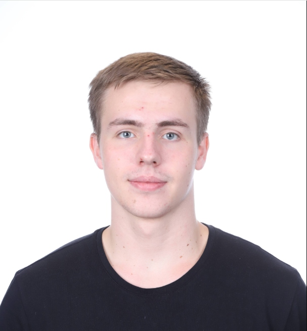

Valère Damée
Étudiant Ingénieur Informatique
Étudiant en 2e année à EPITA, passionné d'informatique et d'arts martiaux.
Développeur curieux, rigoureux et orienté vers la collaboration.
Langues
Formation
EPITA — École d'Ingénieurs en Informatique, Paris
Structures de données, Algorithmique, Programmation orientée objet, Sécurité réseau, Bases de données, Mathématiques appliquées (algèbre linéaire, analyse, statistiques).
2ème année — En cours
Lycée Colbert, Paris X
Spécialités : Mathématiques, NSI (Numérique et Sciences Informatiques), Mathématiques expertes.
Gymnasium n°53, Nijni Novgorod, Russie
Formation internationale en Russie, parcours scientifique.